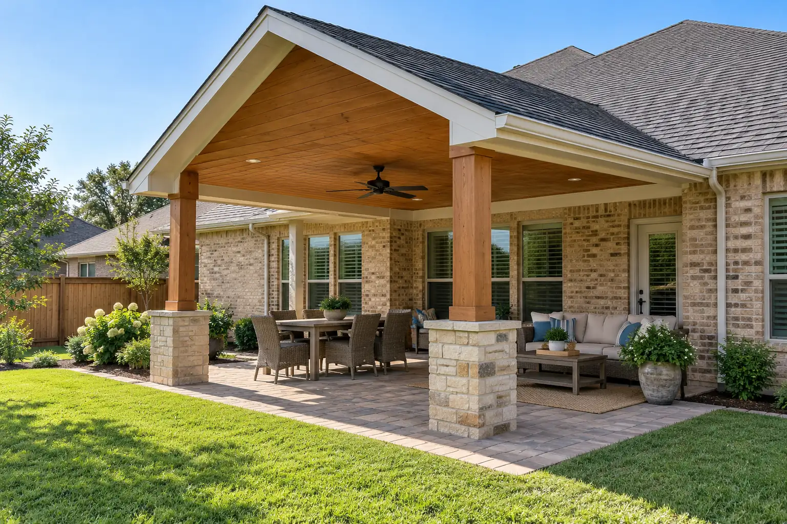
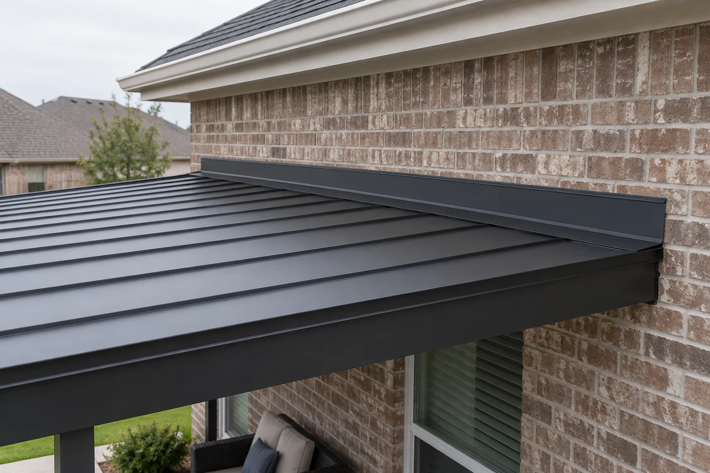
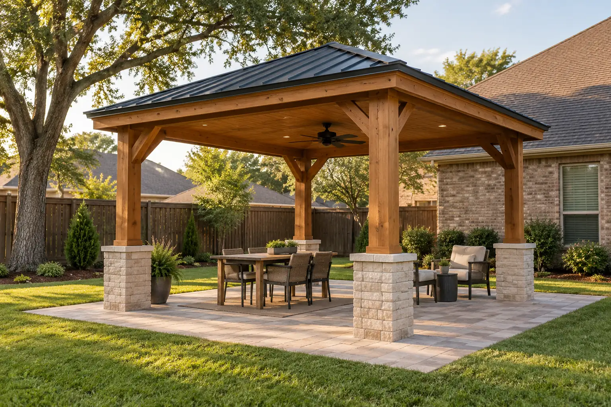
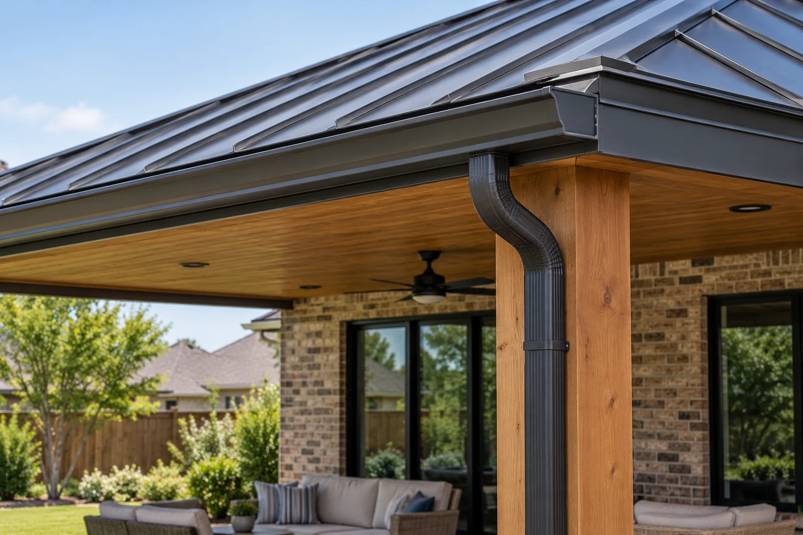
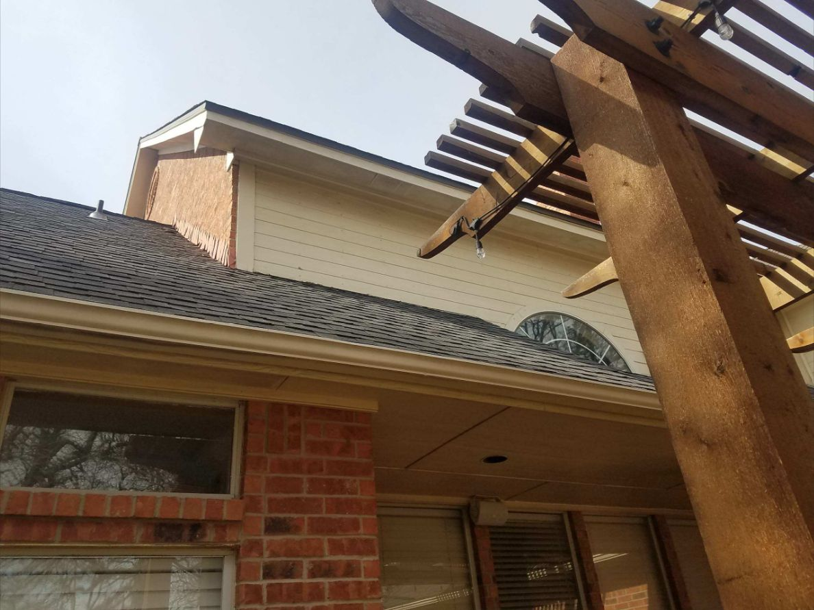

Freestanding covers still need foundation planning
A separate structure requires suitable footings, posts and bracing for its loads and site conditions. Review utilities and access before choosing post locations or a finished roof size.
Arlington, Texas
Custom patio covers designed for shade, weather protection and a finished connection to the home with coordinated framing, roofing and exterior details.
Patio covers / Arlington, Texas
For patio covers in Arlington, this guide focuses on freestanding covers still need foundation planning. Use it to discuss the conditions at your property and compare the proposed work.
A separate structure requires suitable footings, posts and bracing for its loads and site conditions. Review utilities and access before choosing post locations or a finished roof size.
If the property remains in use, agree on protected routes, room access, material storage and the point at which each area can be used again. The work plan should identify who moves belongings and how the construction area is separated.

Simpson Strong-Tie
Connectors transfer forces between specified framing members when installed with the correct compatible fasteners.
Selection check
Selection depends on the loads, wood treatment, exposure and connection geometry. Decorative appearance does not establish structural capacity.
Product documentation governs the selected connector. A hardware warranty does not replace structural design or cover an unspecified assembly.

Simpson Strong-Tie reference
Wood assemblies need a suitable species or treatment, sound supporting members and compatible connectors for the exposure.
Selection check
Review moisture exposure, end grain, ground contact, finish maintenance and fastener corrosion before selecting the lumber.
Lumber, finish and hardware can carry different terms. Ask for the actual supplier and component documents instead of assuming lifetime coverage.

Huber ZIP System
Sheathing, compatible tape and flashing can form a specified water- and air-management assembly.
Selection check
Plan panel joints, openings, penetrations and connections to the roof and foundation. Do not mix components without written approval for that assembly.
ZIP System publishes a 30-year limited warranty for qualifying residential assemblies; commercial requirements differ.
A separate structure requires suitable footings, posts and bracing for its loads and site conditions. Bring photographs, dimensions and any relevant previous repair records to the discussion.
Compare structural connectors and fasteners, exterior wood and compatible connections, integrated sheathing and seam treatment. Specify the selected components and the preparation they require.
Locate foundations and required bracing. The work plan should identify who moves belongings and how the construction area is separated.
Include a room sequence, daily access route, protection responsibilities and a handoff before each area is returned to use. Confirm these details against the actual scope rather than assuming every phase can happen around normal occupancy.
Locate foundations and required bracing. The written scope should also identify the selected products, work boundaries, required trade coordination and approval steps for changes.
No. These are references for comparing product categories. Availability, suitability, the exact model and the actual supplier must be confirmed for the property. A reference does not imply certification, stock or a brand affiliation.
Manufacturer coverage: Terms apply to the exact product and eligible application. Material coverage, complete-system programs and installation workmanship are different obligations. Request the current written warranty and care instructions; a warranty term is not a guaranteed service life. Generic illustrations are original explanatory artwork, not branded packaging.
Discuss the conditions at your property.
Include the project address, relevant photos and your priorities.
Service planning imagery
These service-appropriate scenes support planning conversations. Representative illustrations are labeled, and genuine portfolio photographs are identified as Dallas-Fort Worth references rather than work in this page's city.

Representative illustration
Solid-roof shade for dining and relaxing.
This representative illustration is not a photograph of a Luna job or work completed in Arlington.

Representative illustration
Patio-cover roof meeting the home.
This representative illustration is not a photograph of a Luna job or work completed in Arlington.

Representative illustration
Freestanding covered patio.
This representative illustration is not a photograph of a Luna job or work completed in Arlington.

Representative illustration
Patio-cover gutter and downspout detail.
This representative illustration is not a photograph of a Luna job or work completed in Arlington.

Existing Luna portfolio photograph
Related DFW pergola/eaves reference for outdoor-structure planning; not a solid-roof patio-cover project.
Existing Luna General Contractors portfolio photograph from Dallas-Fort Worth. It is not represented as work completed in Arlington.
A separate structure requires suitable footings, posts and bracing for its loads and site conditions. Review utilities and access before choosing post locations or a finished roof size.
If the property remains in use, agree on protected routes, room access, material storage and the point at which each area can be used again. The work plan should identify who moves belongings and how the construction area is separated.
Scheduling, access, protection, materials, trade coordination, cleanup and any hidden conditions are reviewed before work begins.
In many cases it can, but the connection, flashing, drainage and structural support must be evaluated before construction.
Permit requirements vary by city and depend on size, attachment method, structure and electrical work.
Yes. Luna General Contractors serves homes and businesses throughout Arlington and nearby communities.
Professional, reliable and detail-oriented from planning through completion. The craftsmanship and finished work exceeded expectations.
Read review summary · Source: Google →Top-notch communication, professionalism and attention to detail on a Jack-and-Jill bathroom renovation.
Read review summary · Source: Google →“Fair price for great work. Definitely recommend them for general repairs and maintenance.”
View public recommendation →Read customer feedback with the original source identified for every review.
View All Customer Reviews →Start Your Project
Tell us about your property and the work you have in mind. We can discuss the scope, access, material selections and next steps.